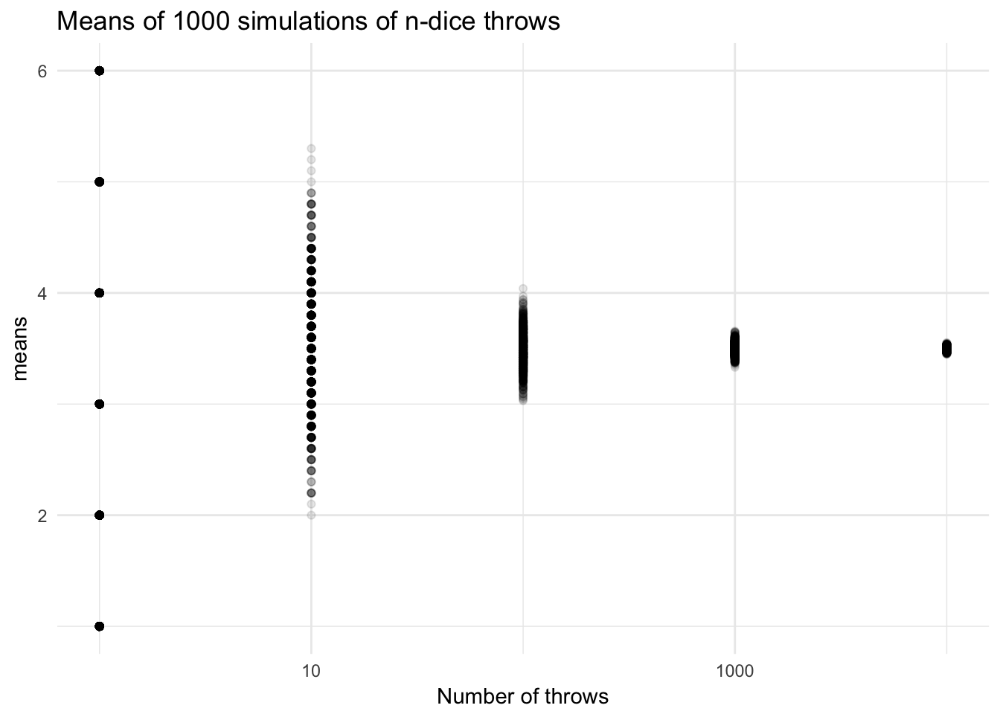
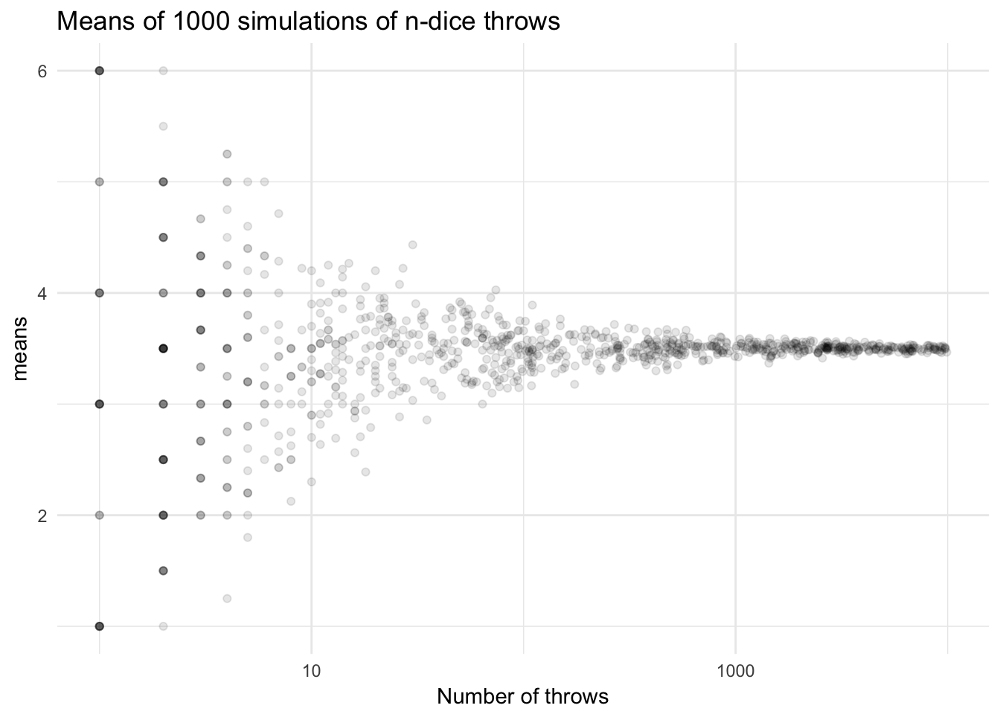
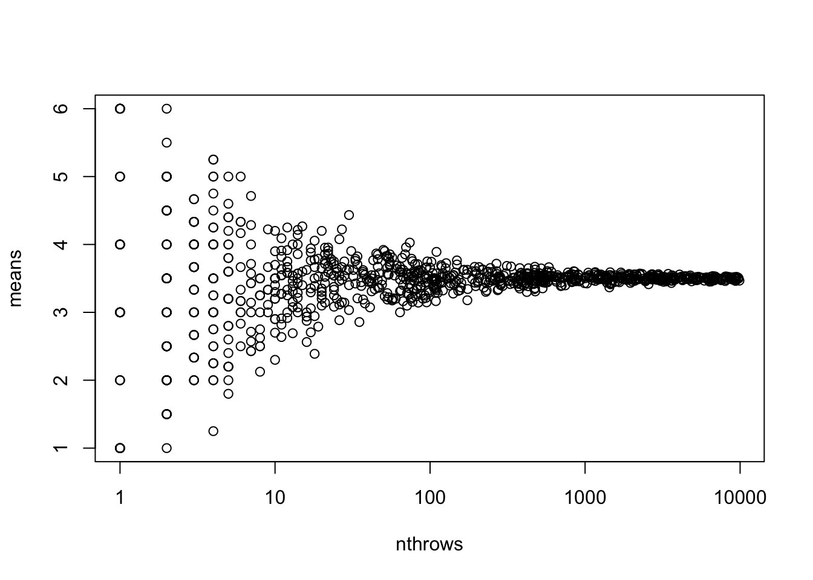
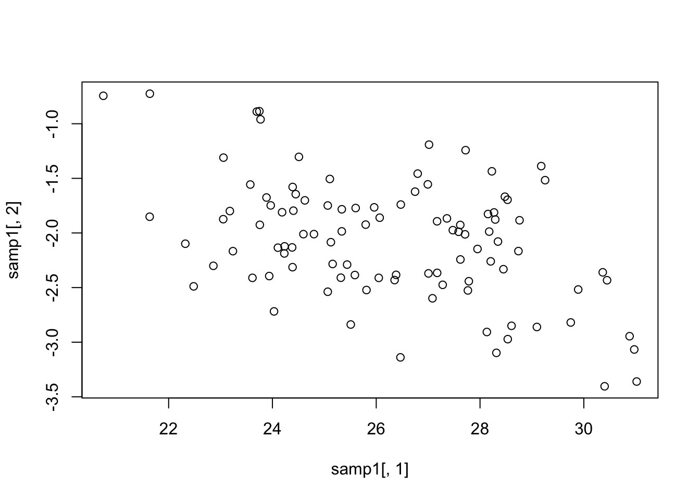
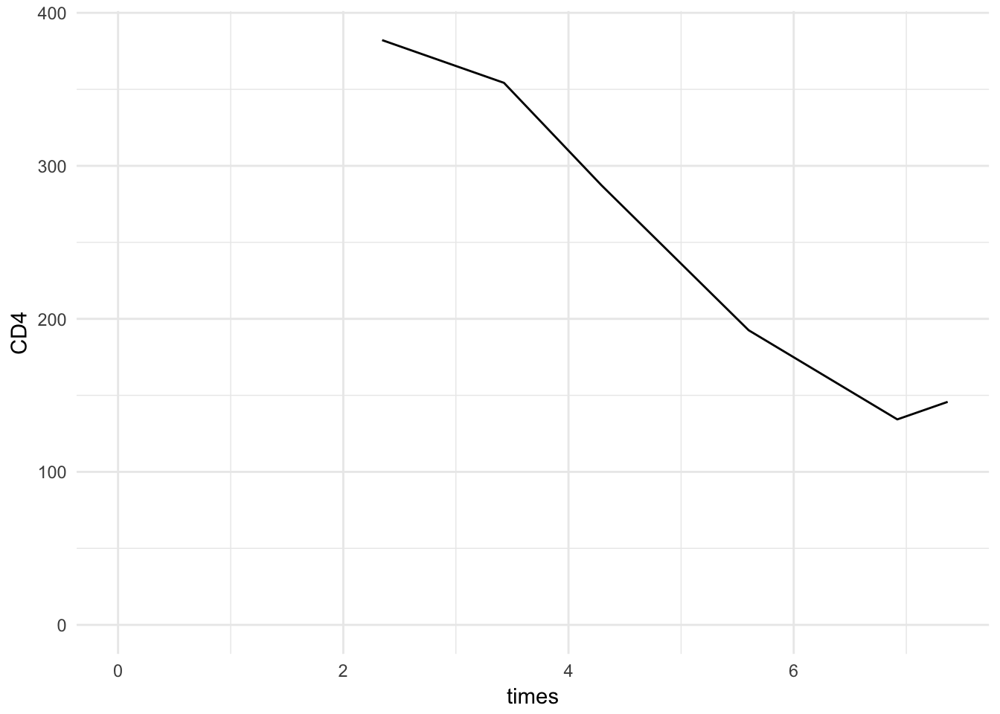
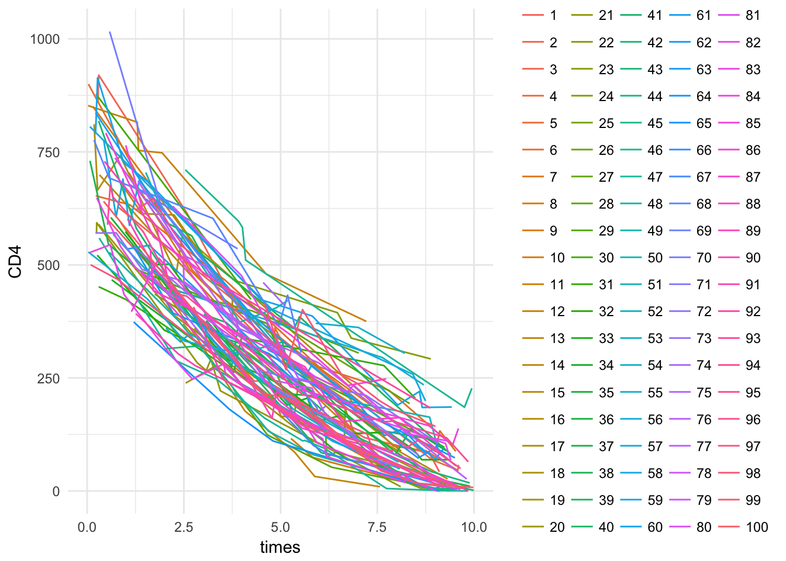
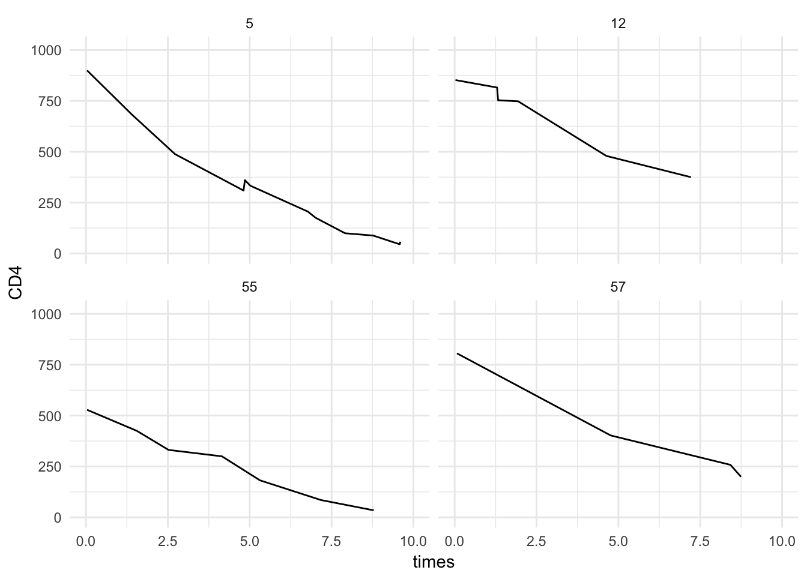

Last updated: 2018-02-14
Code version: 4a4abb1
library(dplyr)
library(data.table)
library(magrittr)
library(purrr)
library(here) # for tracking working directorycoinflip <- function(num){
sample(x = c(1,2), size = num, replace = TRUE)
}Make dice roll function
diceroll <- function(num) {
sample(x = 1:6, size = num, replace = TRUE)
}
diceroll(4)[1] 5 6 5 6diceroll2 <- function(num, sides) {
sample(x = 1:sides, size = num, replace = TRUE)
}
diceroll2(num = 4, sides = 4)[1] 2 1 2 3Take dice with 6 sides, which was diceroll
Let’s roll the dice 1, 10, 100, 1000 and 10000 times, calculate the mean, and do this 1000 times
We will use the package purrr to map functions to the list of number of throws
require(magrittr)
require(purrr)
nsim = 1000
nthrow = 10^(0:4)
nthrows <- rep(nthrow, times = nsim)
nthrow %>%
map(diceroll) %>%
map_dbl(mean)[1] 5.0000 2.8000 3.6700 3.5860 3.4904means <- list(nthrows) %>%
pmap(diceroll) %>% # apply diceroll to each row of nthrows, returns a list
map_dbl(mean) # apply mean to each element of the list, return a double vector
df <- data.frame(nthrows, means)Visualize results
require(ggplot2)
df %>%
ggplot(aes(x = nthrows, y = means)) +
geom_point(alpha = .1) +
scale_x_log10() + theme_minimal() +
ggtitle("Means of 1000 simulations of n-dice throws") +
labs(x = "Number of throws")
Now with uniform sampling on logarithmic scale
nthrows <- round(10^runif(min = 0, max = 4, n = nsim))
means <- list(nthrows) %>%
pmap(diceroll) %>% # apply diceroll to each row of nthrows, returns a list
map_dbl(mean) # apply mean to each element of the list, return a double vector
df <- data.frame(nthrows, means)
df %>%
ggplot(aes(x = nthrows, y = means)) +
geom_point(alpha = .1) +
scale_x_log10() + theme_minimal() +
ggtitle("Means of 1000 simulations of n-dice throws") +
labs(x = "Number of throws")
Or with base-R plot
plot(means~nthrows, data = df, log = "x")
Get data
smokedat <- data.frame(
id = 1:20,
smoking.status = c(NA, "never smoked", "never smoked", "never smoked", "never smoked", "never smoked", "never smoked", "has smoked", "has smoked", "has smoked", "has smoked", "has smoked", "has smoked", "currently smoking", "currently smoking", "currently smoking", "currently smoking", "currently smoking", "currently smoking", "currently smoking"),
outcome = c("no hart infarction", NA, "no hart infarction", "no hart infarction", "no hart infarction", "no hart infarction", "hart infarction", "no hart infarction", "no hart infarction", "no hart infarction", "no hart infarction", "hart infarction", "hart infarction", "hart infarction", "no hart infarction", "no hart infarction", "no hart infarction", "hart infarction", "hart infarction", "hart infarction")
)View
smokedat id smoking.status outcome
1 1 <NA> no hart infarction
2 2 never smoked <NA>
3 3 never smoked no hart infarction
4 4 never smoked no hart infarction
5 5 never smoked no hart infarction
6 6 never smoked no hart infarction
7 7 never smoked hart infarction
8 8 has smoked no hart infarction
9 9 has smoked no hart infarction
10 10 has smoked no hart infarction
11 11 has smoked no hart infarction
12 12 has smoked hart infarction
13 13 has smoked hart infarction
14 14 currently smoking hart infarction
15 15 currently smoking no hart infarction
16 16 currently smoking no hart infarction
17 17 currently smoking no hart infarction
18 18 currently smoking hart infarction
19 19 currently smoking hart infarction
20 20 currently smoking hart infarction?tabletable(smokedat$smoking.status, smokedat$outcome)
hart infarction no hart infarction
currently smoking 4 3
has smoked 2 4
never smoked 1 4Modify the previous command, to also display the numbers of missing.
table(smokedat$smoking.status, smokedat$outcome, useNA = "always")
hart infarction no hart infarction <NA>
currently smoking 4 3 0
has smoked 2 4 0
never smoked 1 4 1
<NA> 0 1 0These tables are rather simple, we would like to add row and column totals as well as proportions.
Assign the table created in C) to an object called smoketab. Use the book, R forum, Google, etc. to find the commands to calculate row and column sums. In the same way, find the commands to bind rows and columns. Apply the above commands to create smoketab2, with the row totals added to smoketab as a new column. In addition, create smoketab3 with the column totals added to smoketab2 as a new row.
smoketab <- table(smokedat$smoking.status, smokedat$outcome, useNA = "always")
smoketab2 <- cbind(smoketab, total = rowSums(smoketab))
smoketab3 <- rbind(smoketab2, total = colSums(smoketab2))
smoketab3 hart infarction no hart infarction <NA> total
currently smoking 4 3 0 7
has smoked 2 4 0 6
never smoked 1 4 1 6
<NA> 0 1 0 1
total 7 12 1 20Calculate row proportions for smoketab3 (hint: You can divide smoketab3 by the row totals). Store the new table in an object called smoketab3.RP.
Each row get’s multiplied with 1 divided by the sum of the columns
We can create a matrix with 1 over the column totals, and do element-wise product
totals <- tail(smoketab3, 1)
total_matrix <- matrix(rep(1/totals, nrow(smoketab3)),
nrow = nrow(smoketab3), byrow = T)
total_matrix [,1] [,2] [,3] [,4]
[1,] 0.1428571 0.08333333 1 0.05
[2,] 0.1428571 0.08333333 1 0.05
[3,] 0.1428571 0.08333333 1 0.05
[4,] 0.1428571 0.08333333 1 0.05
[5,] 0.1428571 0.08333333 1 0.05smoketab3.RP <- smoketab3 * total_matrix
smoketab3.RP hart infarction no hart infarction <NA> total
currently smoking 0.5714286 0.25000000 0 0.35
has smoked 0.2857143 0.33333333 0 0.30
never smoked 0.1428571 0.33333333 1 0.30
<NA> 0.0000000 0.08333333 0 0.05
total 1.0000000 1.00000000 1 1.00Calculate columns proportions as well, in the same manner (note: you will need to transpose the table, and then transpose back afterwards). Store the new table in an object called smoketab3.CP.
col_totals <- smoketab3[, "total"]
col_total_matrix <- matrix(rep(1/col_totals, each = ncol(smoketab3)),
nrow = nrow(smoketab3), byrow = T)
col_total_matrix [,1] [,2] [,3] [,4]
[1,] 0.1428571 0.1428571 0.1428571 0.1428571
[2,] 0.1666667 0.1666667 0.1666667 0.1666667
[3,] 0.1666667 0.1666667 0.1666667 0.1666667
[4,] 1.0000000 1.0000000 1.0000000 1.0000000
[5,] 0.0500000 0.0500000 0.0500000 0.0500000smoketab3.CP <- smoketab3 * col_total_matrix
smoketab3.CP hart infarction no hart infarction <NA> total
currently smoking 0.5714286 0.4285714 0.0000000 1
has smoked 0.3333333 0.6666667 0.0000000 1
never smoked 0.1666667 0.6666667 0.1666667 1
<NA> 0.0000000 1.0000000 0.0000000 1
total 0.3500000 0.6000000 0.0500000 1using the list() command, produce a list containing smoketab3, smoketab3.RP and smoketab3.CP. Name these three components “tab”, “rowprop” and “colprop”, respectively.
tab_list <- list(tab = smoketab3, rowprop = smoketab3.RP, colprop = smoketab3.CP)Now make an improved table function yourself. Note: build a function that uses the arguments variable1, variable2 and dat, to produce a list such as you made in A) - G). variable1 and variable2 should be character values (containing text between quotes). Note that selection of columns or rows can also be done e.g. using smokedat[,“smoking.status”] (try it).
table2 <- function(data, variable1, variable2) {
x <- data[[variable1]]
y <- data[[variable2]]
# use dnn to preserve variable names
tab <- table(x, y, dnn = c(variable1, variable2), useNA = "always")
row_totals <- rowSums(tab)
tab2 <- cbind(tab, total = row_totals)
col_totals <- colSums(tab2)
tab3 <- rbind(tab2, total = col_totals)
# update col and row totals
row_totals <- rowSums(tab3) / 2
col_totals <- colSums(tab3) / 2
row_total_matrix <- matrix(rep(row_totals, each = ncol(tab3)),
nrow = nrow(tab3), byrow = T)
col_total_matrix <- matrix(rep(col_totals, each = nrow(tab3)),
nrow = nrow(tab3), byrow = F)
tab3.RP <- tab3 / row_total_matrix
tab3.CP <- tab3 / col_total_matrix
tabs <- list(tab = tab3, rowprop = tab3.RP, colprop = tab3.CP)
return(tabs)
}
table2(smokedat, "smoking.status", "outcome")$tab
hart infarction no hart infarction <NA> total
currently smoking 4 3 0 7
has smoked 2 4 0 6
never smoked 1 4 1 6
<NA> 0 1 0 1
total 7 12 1 20
$rowprop
hart infarction no hart infarction <NA> total
currently smoking 0.5714286 0.4285714 0.0000000 1
has smoked 0.3333333 0.6666667 0.0000000 1
never smoked 0.1666667 0.6666667 0.1666667 1
<NA> 0.0000000 1.0000000 0.0000000 1
total 0.3500000 0.6000000 0.0500000 1
$colprop
hart infarction no hart infarction <NA> total
currently smoking 0.5714286 0.25000000 0 0.35
has smoked 0.2857143 0.33333333 0 0.30
never smoked 0.1428571 0.33333333 1 0.30
<NA> 0.0000000 0.08333333 0 0.05
total 1.0000000 1.00000000 1 1.00In the book, R forum, internet or elsewhere, can you find a crosstable function that provides similar functionality (row and column totals and proportions)?
I googled for ‘r package table with proportions and margins’
Found: gmodels on the website Quick-R
Works like:
gmodels::CrossTable(smokedat$smoking.status, smokedat$outcome)
Cell Contents
|-------------------------|
| N |
| Chi-square contribution |
| N / Row Total |
| N / Col Total |
| N / Table Total |
|-------------------------|
Total Observations in Table: 18
| smokedat$outcome
smokedat$smoking.status | hart infarction | no hart infarction | Row Total |
------------------------|--------------------|--------------------|--------------------|
currently smoking | 4 | 3 | 7 |
| 0.600 | 0.382 | |
| 0.571 | 0.429 | 0.389 |
| 0.571 | 0.273 | |
| 0.222 | 0.167 | |
------------------------|--------------------|--------------------|--------------------|
has smoked | 2 | 4 | 6 |
| 0.048 | 0.030 | |
| 0.333 | 0.667 | 0.333 |
| 0.286 | 0.364 | |
| 0.111 | 0.222 | |
------------------------|--------------------|--------------------|--------------------|
never smoked | 1 | 4 | 5 |
| 0.459 | 0.292 | |
| 0.200 | 0.800 | 0.278 |
| 0.143 | 0.364 | |
| 0.056 | 0.222 | |
------------------------|--------------------|--------------------|--------------------|
Column Total | 7 | 11 | 18 |
| 0.389 | 0.611 | |
------------------------|--------------------|--------------------|--------------------|
If you still have time, make an improved version of the function that you made in H) that includes rounding of the decimals in rowprop and colprop.
table3 <- function(data, variable1, variable2, ndigits = NULL) {
x <- data[[variable1]]
y <- data[[variable2]]
# use dnn to preserve variable names
tab <- table(x, y, dnn = c(variable1, variable2), useNA = "always")
row_totals <- rowSums(tab)
tab2 <- cbind(tab, total = row_totals)
col_totals <- colSums(tab2)
tab3 <- rbind(tab2, total = col_totals)
# update col and row totals
row_totals <- rowSums(tab3) / 2
col_totals <- colSums(tab3) / 2
row_total_matrix <- matrix(rep(row_totals, each = ncol(tab3)),
nrow = nrow(tab3), byrow = T)
col_total_matrix <- matrix(rep(col_totals, each = nrow(tab3)),
nrow = nrow(tab3), byrow = F)
tab3.RP <- tab3 / row_total_matrix
tab3.CP <- tab3 / col_total_matrix
tabs <- list(tab = tab3, rowprop = tab3.RP, colprop = tab3.CP)
# no rounding
if (is.null(ndigits)) return(tabs)
# rounding
tabs_rounded <- tabs %>%
purrr::map(round, ndigits)
return(tabs_rounded)
}
table3(smokedat, "smoking.status", "outcome")$tab
hart infarction no hart infarction <NA> total
currently smoking 4 3 0 7
has smoked 2 4 0 6
never smoked 1 4 1 6
<NA> 0 1 0 1
total 7 12 1 20
$rowprop
hart infarction no hart infarction <NA> total
currently smoking 0.5714286 0.4285714 0.0000000 1
has smoked 0.3333333 0.6666667 0.0000000 1
never smoked 0.1666667 0.6666667 0.1666667 1
<NA> 0.0000000 1.0000000 0.0000000 1
total 0.3500000 0.6000000 0.0500000 1
$colprop
hart infarction no hart infarction <NA> total
currently smoking 0.5714286 0.25000000 0 0.35
has smoked 0.2857143 0.33333333 0 0.30
never smoked 0.1428571 0.33333333 1 0.30
<NA> 0.0000000 0.08333333 0 0.05
total 1.0000000 1.00000000 1 1.00table3(smokedat, "smoking.status", "outcome", ndigits = 2)$tab
hart infarction no hart infarction <NA> total
currently smoking 4 3 0 7
has smoked 2 4 0 6
never smoked 1 4 1 6
<NA> 0 1 0 1
total 7 12 1 20
$rowprop
hart infarction no hart infarction <NA> total
currently smoking 0.57 0.43 0.00 1
has smoked 0.33 0.67 0.00 1
never smoked 0.17 0.67 0.17 1
<NA> 0.00 1.00 0.00 1
total 0.35 0.60 0.05 1
$colprop
hart infarction no hart infarction <NA> total
currently smoking 0.57 0.25 0 0.35
has smoked 0.29 0.33 0 0.30
never smoked 0.14 0.33 1 0.30
<NA> 0.00 0.08 0 0.05
total 1.00 1.00 1 1.00Load and examine the haartdat dataset. Note: This can be done using the function load().
load(here("data", "haartdat.rda"))
str(haartdat)'data.frame': 19175 obs. of 10 variables:
$ patient : int 1 1 1 1 1 1 1 1 1 1 ...
$ tstart : num -100 0 100 200 300 400 500 600 700 800 ...
$ fuptime : num 0 100 200 300 400 500 600 700 800 900 ...
$ haartind: num 0 0 0 0 0 0 0 1 1 1 ...
$ event : num 0 0 0 0 0 0 0 0 0 0 ...
$ sex : num 1 1 1 1 1 1 1 1 1 1 ...
$ age : num 22 22 22 22 22 22 22 22 22 22 ...
$ cd4.sqrt: num 23.8 25.6 23.5 24.2 23.2 ...
$ endtime : num 2900 2900 2900 2900 2900 2900 2900 2900 2900 2900 ...
$ dropout : num 0 0 0 0 0 0 0 0 0 0 ...Try out the split() command in the following manner: * Split haartdat into a list of individual datasets, based on the patient ID * Name this list datlist * Look at some components in this list, e.g. the first, second or 20th component
uniqueN(haartdat$patient)[1] 1200datlist <- base::split(haartdat, haartdat$patient)
datlist[[1]] patient tstart fuptime haartind event sex age cd4.sqrt endtime dropout
1 1 -100 0 0 0 1 22 23.83275 2900 0
2 1 0 100 0 0 1 22 25.59297 2900 0
3 1 100 200 0 0 1 22 23.47339 2900 0
4 1 200 300 0 0 1 22 24.16609 2900 0
5 1 300 400 0 0 1 22 23.23790 2900 0
6 1 400 500 0 0 1 22 24.85961 2900 0
7 1 500 600 0 0 1 22 25.94224 2900 0
8 1 600 700 1 0 1 22 26.03843 2900 0
9 1 700 800 1 0 1 22 26.72078 2900 0
10 1 800 900 1 0 1 22 27.47726 2900 0
11 1 900 1000 1 0 1 22 23.87467 2900 0
12 1 1000 1100 1 0 1 22 28.30194 2900 0
13 1 1100 1200 1 0 1 22 25.72936 2900 0
14 1 1200 1300 1 0 1 22 22.62742 2900 0
15 1 1300 1400 1 0 1 22 30.16621 2900 0
16 1 1400 1500 1 0 1 22 23.04344 2900 0
17 1 1500 1600 1 0 1 22 25.09980 2900 0
18 1 1600 1700 1 0 1 22 23.62202 2900 0
19 1 1700 1800 1 0 1 22 23.49468 2900 0
20 1 1800 1900 1 0 1 22 26.57066 2900 0
21 1 1900 2000 1 0 1 22 28.47806 2900 0
22 1 2000 2100 1 0 1 22 20.59126 2900 0
23 1 2100 2200 1 0 1 22 23.87467 2900 0
24 1 2200 2300 1 0 1 22 25.53429 2900 0
25 1 2300 2400 1 0 1 22 22.56103 2900 0
26 1 2400 2500 1 0 1 22 21.93171 2900 0
27 1 2500 2600 1 0 1 22 28.23119 2900 0
28 1 2600 2700 1 0 1 22 21.97726 2900 0
29 1 2700 2800 1 0 1 22 22.84732 2900 0
30 1 2800 2900 1 0 1 22 26.85144 2900 1datlist[[10]] patient tstart fuptime haartind event sex age cd4.sqrt endtime dropout
258 10 -100 0 0 0 0 35 16.21727 2900 0
259 10 0 100 0 0 0 35 18.73499 2900 0
260 10 100 200 1 0 0 35 14.42221 2900 0
261 10 200 300 1 0 0 35 17.88854 2900 0
262 10 300 400 1 0 0 35 17.97220 2900 0
263 10 400 500 1 0 0 35 16.94107 2900 0
264 10 500 600 1 0 0 35 17.05872 2900 0
265 10 600 700 1 0 0 35 18.38478 2900 0
266 10 700 800 1 0 0 35 20.00000 2900 0
267 10 800 900 1 0 0 35 14.69694 2900 0
268 10 900 1000 1 0 0 35 15.68439 2900 0
269 10 1000 1100 1 0 0 35 18.60108 2900 0
270 10 1100 1200 1 0 0 35 15.87451 2900 0
271 10 1200 1300 1 0 0 35 15.90597 2900 0
272 10 1300 1400 1 0 0 35 16.15549 2900 0
273 10 1400 1500 1 0 0 35 14.59452 2900 0
274 10 1500 1600 1 0 0 35 18.81489 2900 0
275 10 1600 1700 1 0 0 35 14.03567 2900 0
276 10 1700 1800 1 0 0 35 16.12452 2900 0
277 10 1800 1900 1 0 0 35 15.16575 2900 0
278 10 1900 2000 1 0 0 35 14.10674 2900 0
279 10 2000 2100 1 0 0 35 14.56022 2900 0
280 10 2100 2200 1 0 0 35 15.68439 2900 0
281 10 2200 2300 1 0 0 35 13.45362 2900 0
282 10 2300 2400 1 0 0 35 12.76715 2900 0
283 10 2400 2500 1 0 0 35 15.29706 2900 0
284 10 2500 2600 1 0 0 35 13.22876 2900 0
285 10 2600 2700 1 0 0 35 13.60147 2900 0
286 10 2700 2800 1 0 0 35 10.58301 2900 0
287 10 2800 2900 1 0 0 35 11.00000 2900 1length(datlist)[1] 1200Reverse the splitting operation by unsplit(), name the resulting object haartdat2. Are haartdat and haartdat2 identical? (Hint: take a summary of haartdat - haartdat2).
haartdat2 <- unsplit(datlist, haartdat$patient)
summary(haartdat2 - haartdat) patient tstart fuptime haartind event sex
Min. :0 Min. :0 Min. :0 Min. :0 Min. :0 Min. :0
1st Qu.:0 1st Qu.:0 1st Qu.:0 1st Qu.:0 1st Qu.:0 1st Qu.:0
Median :0 Median :0 Median :0 Median :0 Median :0 Median :0
Mean :0 Mean :0 Mean :0 Mean :0 Mean :0 Mean :0
3rd Qu.:0 3rd Qu.:0 3rd Qu.:0 3rd Qu.:0 3rd Qu.:0 3rd Qu.:0
Max. :0 Max. :0 Max. :0 Max. :0 Max. :0 Max. :0
age cd4.sqrt endtime dropout
Min. :0 Min. :0 Min. :0 Min. :0
1st Qu.:0 1st Qu.:0 1st Qu.:0 1st Qu.:0
Median :0 Median :0 Median :0 Median :0
Mean :0 Mean :0 Mean :0 Mean :0
3rd Qu.:0 3rd Qu.:0 3rd Qu.:0 3rd Qu.:0
Max. :0 Max. :0 Max. :0 Max. :0 All zeros, so equal, check dimensions
dim(haartdat)[1] 19175 10dim(haartdat2)[1] 19175 10Suppose we want to determine the minimum of the CD4 counts for each patient. Make an individual dataset inddat, containing one row for each patient, with only the patient ID (HINT: use unique()). Split the CD4 measurements in haartdat per individual, name this object cd4.split. Using sapply(), take the minimum of CD4 count for each individual, and add the resulting vector to inddat.
inddat <- unique(haartdat$patient)
cd4.split <- split(haartdat$cd4.sqrt, haartdat$patient)
cd4s <- sapply(cd4.split, min)
inddat <- data.frame(patient = inddat, min_cd4 = cd4s)
head(inddat) patient min_cd4
1 1 20.59126
2 2 18.05547
3 3 22.95648
4 4 19.64688
5 5 15.87451
6 6 23.62202We can do this we fewer lines of code using dplyr
haartdat %>%
group_by(patient) %>%
summarize(min_cd4 = min(cd4.sqrt))# A tibble: 1,200 x 2
patient min_cd4
<int> <dbl>
1 1 20.6
2 2 18.1
3 3 23.0
4 4 19.6
5 5 15.9
6 6 23.6
7 7 13.1
8 8 9.54
9 9 16.2
10 10 10.6
# ... with 1,190 more rowsOr using data.table
setDT(haartdat) # make data.table (only need to do this once)
haartdat[, list(min_cd4 = min(cd4.sqrt)), by = "patient"] patient min_cd4
1: 1 20.59126
2: 2 18.05547
3: 3 22.95648
4: 4 19.64688
5: 5 15.87451
---
1196: 1196 16.58312
1197: 1197 19.00000
1198: 1198 10.29563
1199: 1199 20.12461
1200: 1200 19.74842Similarly to D), calculate for each patient the maximum of haartind, indicating if somewhere during the follow-up HAART was given. Add the resulting vector to inddat.
Let’s use data.table
inddat <- haartdat[, list(
min_cd4 = min(cd4.sqrt),
haart = max(haartind)
), by = "patient"]
head(inddat) patient min_cd4 haart
1: 1 20.59126 1
2: 2 18.05547 1
3: 3 22.95648 1
4: 4 19.64688 1
5: 5 15.87451 1
6: 6 23.62202 1table(inddat$haart)
0 1
824 376 We would also like to compute for each patient the cumulative amount of HAART treatment at each time point. Hint: to transform a list object (e.g. listname) to a single numeric vector, you can use the command do.call(c, listname) (of course, this only works when the list only contains numeric values).
We can get this by sorting on timepoint, and then calculating a cumulative sum of haart for each patient
haartdat[order(tstart), cum_haart:=cumsum(haartind), by = "patient"]
haartdat[order(patient, tstart)][patient %in% unique(patient)[1:2]] patient tstart fuptime haartind event sex age cd4.sqrt endtime dropout
1: 1 -100 0 0 0 1 22 23.83275 2900 0
2: 1 0 100 0 0 1 22 25.59297 2900 0
3: 1 100 200 0 0 1 22 23.47339 2900 0
4: 1 200 300 0 0 1 22 24.16609 2900 0
5: 1 300 400 0 0 1 22 23.23790 2900 0
6: 1 400 500 0 0 1 22 24.85961 2900 0
7: 1 500 600 0 0 1 22 25.94224 2900 0
8: 1 600 700 1 0 1 22 26.03843 2900 0
9: 1 700 800 1 0 1 22 26.72078 2900 0
10: 1 800 900 1 0 1 22 27.47726 2900 0
11: 1 900 1000 1 0 1 22 23.87467 2900 0
12: 1 1000 1100 1 0 1 22 28.30194 2900 0
13: 1 1100 1200 1 0 1 22 25.72936 2900 0
14: 1 1200 1300 1 0 1 22 22.62742 2900 0
15: 1 1300 1400 1 0 1 22 30.16621 2900 0
16: 1 1400 1500 1 0 1 22 23.04344 2900 0
17: 1 1500 1600 1 0 1 22 25.09980 2900 0
18: 1 1600 1700 1 0 1 22 23.62202 2900 0
19: 1 1700 1800 1 0 1 22 23.49468 2900 0
20: 1 1800 1900 1 0 1 22 26.57066 2900 0
21: 1 1900 2000 1 0 1 22 28.47806 2900 0
22: 1 2000 2100 1 0 1 22 20.59126 2900 0
23: 1 2100 2200 1 0 1 22 23.87467 2900 0
24: 1 2200 2300 1 0 1 22 25.53429 2900 0
25: 1 2300 2400 1 0 1 22 22.56103 2900 0
26: 1 2400 2500 1 0 1 22 21.93171 2900 0
27: 1 2500 2600 1 0 1 22 28.23119 2900 0
28: 1 2600 2700 1 0 1 22 21.97726 2900 0
29: 1 2700 2800 1 0 1 22 22.84732 2900 0
30: 1 2800 2900 1 0 1 22 26.85144 2900 1
31: 2 -100 0 0 0 0 21 18.05547 3300 0
32: 2 0 100 0 0 0 21 20.46949 3300 0
33: 2 100 200 1 0 0 21 22.89105 3300 0
34: 2 200 300 1 0 0 21 26.64583 3300 0
35: 2 300 400 1 0 0 21 22.02272 3300 0
36: 2 400 500 1 0 0 21 22.67157 3300 0
37: 2 500 600 1 0 0 21 24.91987 3300 0
38: 2 600 700 1 0 0 21 23.08679 3300 0
39: 2 700 800 1 0 0 21 22.93469 3300 0
40: 2 800 900 1 0 0 21 28.00000 3300 0
41: 2 900 1000 1 0 0 21 24.69818 3300 0
42: 2 1000 1100 1 0 0 21 25.09980 3300 0
43: 2 1100 1200 1 0 0 21 28.40775 3300 0
44: 2 1200 1300 1 0 0 21 27.11088 3300 0
45: 2 1300 1400 1 0 0 21 28.33725 3300 0
46: 2 1400 1500 1 0 0 21 25.39685 3300 0
47: 2 1500 1600 1 0 0 21 26.22975 3300 0
48: 2 1600 1700 1 0 0 21 26.98148 3300 0
49: 2 1700 1800 1 0 0 21 28.03569 3300 0
50: 2 1800 1900 1 0 0 21 27.42262 3300 0
51: 2 1900 2000 1 0 0 21 27.82086 3300 0
52: 2 2000 2100 1 0 0 21 26.98148 3300 0
53: 2 2100 2200 1 0 0 21 29.05168 3300 0
54: 2 2200 2300 1 0 0 21 29.46184 3300 0
55: 2 2300 2400 1 0 0 21 28.35489 3300 0
56: 2 2400 2500 1 0 0 21 26.68333 3300 0
57: 2 2500 2600 1 0 0 21 23.10844 3300 0
58: 2 2600 2700 1 0 0 21 25.47548 3300 0
59: 2 2700 2800 1 0 0 21 28.80972 3300 0
60: 2 2800 2900 1 0 0 21 27.80288 3300 0
61: 2 2900 3000 1 0 0 21 26.83282 3300 0
62: 2 3000 3100 1 0 0 21 28.74022 3300 0
63: 2 3100 3200 1 0 0 21 27.38613 3300 0
64: 2 3200 3300 1 0 0 21 28.35489 3300 0
patient tstart fuptime haartind event sex age cd4.sqrt endtime dropout
cum_haart
1: 0
2: 0
3: 0
4: 0
5: 0
6: 0
7: 0
8: 1
9: 2
10: 3
11: 4
12: 5
13: 6
14: 7
15: 8
16: 9
17: 10
18: 11
19: 12
20: 13
21: 14
22: 15
23: 16
24: 17
25: 18
26: 19
27: 20
28: 21
29: 22
30: 23
31: 0
32: 0
33: 1
34: 2
35: 3
36: 4
37: 5
38: 6
39: 7
40: 8
41: 9
42: 10
43: 11
44: 12
45: 13
46: 14
47: 15
48: 16
49: 17
50: 18
51: 19
52: 20
53: 21
54: 22
55: 23
56: 24
57: 25
58: 26
59: 27
60: 28
61: 29
62: 30
63: 31
64: 32
cum_haartThe goal of this exercise is to simulate longitudinal patient data (n = 100). As an example, we use the development of CD4 count in HIV positive individuals. We consider development since the moment of HIV seroconversion (= t0). Typically, CD4 count decreases over time after seroconversion. For now, we assume that the square root of CD4 count decrease linearly over time. We further assume each patient has a different intercept and slope for sqrt(CD4).
Build a data frame called basdat, containing patient IDs 1, 2, …, 100.
basdat <- data.frame(id = 1:100)From a bivariate normal distribution with means (26, -2), variances (5, 0.25) and covariance -0.5, draw 100 samples. These represent the patient-level intercepts and slopes. Paste the values to basdat. Make sure the column names in basdat are informative. Also make sure that the class of basdat remains “data.frame”.
The covariance of \(<0\) means that we model that patients with higher intercepts (‘baseline CD4 count’), the slope is more negative, so the CD4 count goes down faster.
require(mvtnorm)
means <- c(26, -2)
variances <- c(5, 0.25)
covariance <- -0.5
cov_mat <- matrix(c(variances[1], covariance, covariance, variances[2]),
nrow = 2, byrow = T)
set.seed(2)
samp1 <-rmvnorm(n = nrow(basdat), mean = means, sigma = cov_mat)
str(samp1) num [1:100, 1:2] 24 29.7 25.8 27.6 30.4 ...Check means, variances and covariance
mean(samp1[, 1]); var(samp1[, 1])[1] 26.23858[1] 5.442759mean(samp1[, 2]); var(samp1[, 2])[1] -2.064848[1] 0.3031027cov(samp1[, 1], samp1[, 2])[1] -0.5774269Plot
plot(samp1[,1], samp1[, 2])
Add to data.frame
basdat %<>%
mutate(intercept = samp1[, 1], slope = samp1[, 2])
head(basdat) id intercept slope
1 1 23.96704 -1.747633
2 2 29.74817 -2.819619
3 3 25.79658 -1.923623
4 4 27.62208 -2.242741
5 5 30.44786 -2.432938
6 6 26.74836 -1.621789We (simply) assume these patients are all followed for 10 years. However, the number of CD4 measurements differs between patients. From a Poisson distribution, draw a vector of numbers of measurements, with a mean of 5 (= lambda). Make sure these draws will be a new column of basdat. Call the column nmeas.
basdat %<>%
mutate(nmeas = rpois(nrow(basdat), lambda = 5))Check for zeros in nmeas, convert these all to 1 for simplicity. Note that in reality, allowing for the zeros will be more realistic.
Use data.table
setDT(basdat)
basdat[nmeas == 0, .N][1] 1Change to 1
basdat[nmeas == 0, nmeas:=1]Now we will simulate and plot longitudinal data for the first patient (we will repeat the process for the patients 2-100 later). Make a dataframe “longdat”, which will contain the simulated CD4 measurements. At first put in this dataframe the patient ID, repeated according to the value of nmeas for patient 1. Hint: you can use rep(). Also put in the individual slope and intercept for patient 1.
longdat <- basdat[id == 1, {
.SD %>% # take the columns as specified by .SDcols
map(rep, nmeas) # repeat each one nmeas times
}, .SDcols = c("id", "intercept", "slope")]In longdat, simulate the measurement times, drawn from the uniform distribution on (0, 10).
For readibility, sort on time
longdat[, times:=runif(n = .N, min = 0, max = 10)]
setorder(longdat, times)
print(longdat) id intercept slope times
1: 1 23.96704 -1.747633 2.344975
2: 1 23.96704 -1.747633 3.426912
3: 1 23.96704 -1.747633 4.296028
4: 1 23.96704 -1.747633 5.599569
5: 1 23.96704 -1.747633 6.920055
6: 1 23.96704 -1.747633 7.367007In longdat, compute the “true” square root of CD4, based on the intercept, slope and time. To this “true” value, add normally distributed noise with mean = 0 and SD = 1. This will give the simulated CD4 measurements (on the square root scale). Now compute measured CD4 count itself by squaring.
With dplyr, we can nicely mutate variables after each other
longdat %<>%
mutate(true_CD4 = intercept + slope * times,
CD4_sqrt = true_CD4 + rnorm(nrow(longdat), mean = 0, sd = 1),
CD4 = CD4_sqrt^2) %>% data.table()
head(longdat) id intercept slope times true_CD4 CD4_sqrt CD4
1: 1 23.96704 -1.747633 2.344975 19.86888 19.54934 382.1767
2: 1 23.96704 -1.747633 3.426912 17.97806 18.82151 354.2491
3: 1 23.96704 -1.747633 4.296028 16.45916 16.94282 287.0590
4: 1 23.96704 -1.747633 5.599569 14.18105 13.87738 192.5816
5: 1 23.96704 -1.747633 6.920055 11.87332 11.58823 134.2870
6: 1 23.96704 -1.747633 7.367007 11.09222 12.07265 145.7489Try to make a pretty plot of measured CD4 count against follow-up time for patient 1. Suggestion: use xlim and ylim, to at least display 0 for both axes.
longdat %>%
ggplot(aes(x = times, y = CD4)) +
geom_line() +
lims(x = c(0, max(longdat$times)), y = c(0, max(longdat$CD4))) +
theme_minimal()
Some more fun: put together all the code used to simulate and plot the data for patient 1. Now replace the number 1, indicating patient 1, by the letter i. Try: with first defining i <- 1, the same plot as before will be produced. In the main title of the plot, make sure that the patient ID (based on i) is plotted. (HINT: find out how to use paste()). Try it also with i <- 2. Now put your syntax within a “loop” with i ranging from 1 to 100. (Hint: place for (i in 1:100){ before and } after your code). Final step, make sure the output of the loop is send to a PDF plot. Look at the plot, scroll through. Be proud.
By writing the code with data.table, it is now easy to do this for each patient
longdat2 <- basdat[, {
.SD %>% # take the columns as specified by .SDcols
map(rep, nmeas) # repeat each one nmeas times
}, .SDcols = c("intercept", "slope"), by = "id"]
print(longdat2) id intercept slope
1: 1 23.96704 -1.747633
2: 1 23.96704 -1.747633
3: 1 23.96704 -1.747633
4: 1 23.96704 -1.747633
5: 1 23.96704 -1.747633
---
536: 100 24.22942 -2.187417
537: 100 24.22942 -2.187417
538: 100 24.22942 -2.187417
539: 100 24.22942 -2.187417
540: 100 24.22942 -2.187417Simulate times. Note that it does not matter whether we do this for each patient separately or all at the same time.
longdat2[, times:=runif(n = .N, min = 0, max = 10)]
setorder(longdat2, times)Add simulated CD4 counts, also not needed to do this by patient, since for each line we have a time, intercept and slope
longdat2 %<>%
mutate(true_CD4 = intercept + slope * times,
CD4_sqrt = true_CD4 + rnorm(n(), mean = 0, sd = 1), # n() counts the number of rows
CD4 = CD4_sqrt^2) %>%
data.table()Create a plot of all patients at the same time
longdat2 %>%
mutate(id = factor(id)) %>%
ggplot(aes(x = times, y = CD4, col = id)) +
geom_line() +
lims(x = c(0, max(longdat2$times)), y = c(0, max(longdat2$CD4))) +
theme_minimal()
Create a plot for each patient separately (only 4 are shown here)
longdat2[id %in% unique(id)[1:4]] %>%
mutate(id = factor(id)) %>%
ggplot(aes(x = times, y = CD4)) +
geom_line() +
lims(x = c(0, max(longdat2$times)), y = c(0, max(longdat2$CD4))) +
theme_minimal() +
facet_wrap(~id, scales = "fixed")
To create pdfs separately for each patient, we will use looping.
Let’s only use 3 patients here
for (i in 1:3) {
longdat2[id == i] %>%
ggplot(aes(x = times, y = CD4)) +
geom_line() +
lims(x = c(0, max(longdat2$times)), y = c(0, max(longdat2$CD4))) +
theme_minimal() +
ggtitle("CD4 number over time", paste0("patient ", i))
ggsave(filename = here("figs", paste0("patient_", i, ".pdf")), device = "pdf")
}Or to put them all in one file
plots <- vector("list", nrow(basdat))
for (i in 1:nrow(basdat)) {
plots[[i]] <-
longdat2[id == i] %>%
ggplot(aes(x = times, y = CD4)) +
geom_line() +
lims(x = c(0, max(longdat2$times)), y = c(0, max(longdat2$CD4))) +
theme_minimal() +
ggtitle("CD4 number over time", paste0("patient ", i))
}To save them in a single pdf with one page per patient (this takes some time)
require(gridExtra)
pdf(here("figs", "cd4_vs_time.pdf"), onefile = T)
for (i in seq(length(plots))) {
grid.arrange(plots[[i]])
}
dev.off()Now be proud ;)
sessionInfo()R version 3.4.3 (2017-11-30)
Platform: x86_64-apple-darwin15.6.0 (64-bit)
Running under: macOS Sierra 10.12.6
Matrix products: default
BLAS: /Library/Frameworks/R.framework/Versions/3.4/Resources/lib/libRblas.0.dylib
LAPACK: /Library/Frameworks/R.framework/Versions/3.4/Resources/lib/libRlapack.dylib
locale:
[1] en_US.UTF-8/en_US.UTF-8/en_US.UTF-8/C/en_US.UTF-8/en_US.UTF-8
attached base packages:
[1] stats graphics grDevices utils datasets methods base
other attached packages:
[1] bindrcpp_0.2 mvtnorm_1.0-7 ggplot2_2.2.1
[4] here_0.1 purrr_0.2.4 magrittr_1.5
[7] data.table_1.10.4-3 dplyr_0.7.4
loaded via a namespace (and not attached):
[1] Rcpp_0.12.14 pillar_1.1.0 compiler_3.4.3 git2r_0.20.0
[5] plyr_1.8.4 bindr_0.1 tools_3.4.3 digest_0.6.14
[9] evaluate_0.10.1 tibble_1.4.1 gtable_0.2.0 pkgconfig_2.0.1
[13] rlang_0.1.6 cli_1.0.0 yaml_2.1.16 stringr_1.2.0
[17] knitr_1.18 gtools_3.5.0 rprojroot_1.2 grid_3.4.3
[21] glue_1.2.0 R6_2.2.2 rmarkdown_1.8 gdata_2.18.0
[25] backports_1.1.2 scales_0.5.0 htmltools_0.3.6 gmodels_2.16.2
[29] MASS_7.3-47 assertthat_0.2.0 colorspace_1.3-2 labeling_0.3
[33] utf8_1.1.3 stringi_1.1.6 lazyeval_0.2.1 munsell_0.4.3
[37] crayon_1.3.4 This R Markdown site was created with workflowr